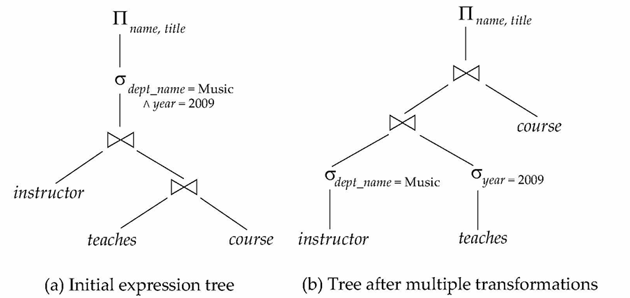
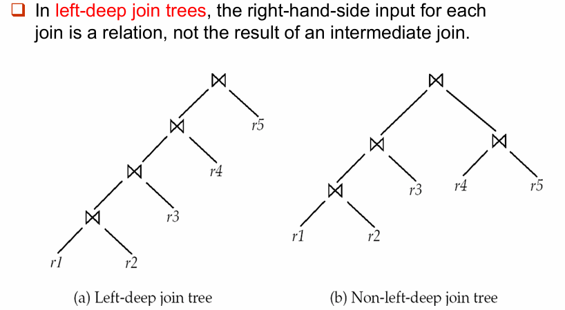

Query Optimization¶
11.1 Introduction¶
这一讲讨论 Query Optimization（查询优化）：
- 同一个 SQL 查询可能有多个逻辑等价的关系代数表达式
- 每个关系代数操作又可能有多个物理执行算法
- 不同执行计划的代价可能差别极大：有的计划几秒完成，有的计划可能跑上几天
Query optimizer 的目标： - 在语义等价的候选执行计划中，选择估计代价最低的那个。
Cost-Based Query Optimization¶
基于代价的查询优化通常分三步：
- 使用 equivalence rules 生成逻辑等价表达式
- 为这些表达式指定具体执行算法，形成多个候选 query plans
- 根据估计代价选择最低成本的计划
计划代价的估计主要依赖：
- relation 的统计信息，例如：
- tuple 数，block 数，某个属性的 distinct value 数
- 对中间结果统计信息的估计：
- 用于估计复杂表达式的后续操作代价
- 各类算法的代价公式：
- 例如上一讲中的 selection、join、sort 代价
Abstract
Query Processing 关心“给定计划后如何执行”；
Query Optimization 关心“在许多可行计划中如何挑出一个好计划”。
11.2 Transformation of Relational Expressions¶
11.2.1 Equivalence of Expressions¶
- 两个关系代数表达式等价，当且仅当：
- 对每个合法数据库实例，它们生成相同的 tuple 集合（不考虑 tuple 的顺序）
- 如果某个数据库实例违反完整性约束，则不要求两个表达式在该实例上的结果也相同
- 在 SQL 中：
- 输入和输出通常是 multisets of tuples，而不是 set
- 因此 SQL 语义下的等价要考虑 tuple 的重复次数
- Equivalence rule：说明两种表达式形式等价
- 优化器可以在不改变查询语义的前提下，用一种形式替换另一种形式
11.2.2 Equivalence Rules¶
Rule 1: Cascade of Selections¶
由多个条件组成的 selection 可以拆成一串单条件 selection：
Rule 2: Commutativity of Selections¶
Selection 操作可交换：
Rule 3: Cascade of Projections¶
连续 projection 中，如果只需要最后一个投影，那么其他的可以省略
- 若 \(L_1 \subseteq L_n (n = 2,3,\dots)\)：
Rule 4: Selection with Product and Join¶
- 对 Cartesian product 的 selection 可以合并成 theta join：
- Selection 也可以并入 theta join 的连接条件：
Rule 5: Commutativity of Joins¶
Theta join 和 natural join 可交换：
Rule 6: Associativity of Joins¶
- Natural join 具有结合律：
- Theta join 在条件可拆分时也可做类似变换：
- 其中 \(\theta_2\) 只涉及 \(E_2\) 和 \(E_3\) 的属性。
Rule 7: Selection Distributes over Join¶
- 如果 \(\theta_0\) 只涉及 \(E_1\) 的属性：
- 如果 \(\theta_1\) 只涉及 \(E_1\) 的属性，\(\theta_2\) 只涉及 \(E_2\) 的属性：
Tip
这是 “perform selections early” 的理论基础：把 selection 尽量下推，先缩小输入 relation，再执行 join。
Rule 8: Projection Distributes over Join¶
考虑：
- 如果 join condition \(\theta\) 只涉及 \(L_1 \cup L_2\) 中的属性，则：
更一般地, 考虑：
令：
- \(L_1\) 和 \(L_2\) 分别表示来自 \(E_1\) 和 \(E_2\) 的属性
- \(L_3\) 表示来自 \(E_1\) 且连接条件 \(\theta\) 需要，但最终结果 \(L_1 \cup L_2\) 中不需要的属性
- \(L_4\) 表示来自 \(E_2\) 且连接条件 \(\theta\) 需要，但最终结果 \(L_1 \cup L_2\) 中不需要的属性
也就是说，下推 projection 时不能把 join condition 需要的属性删掉；应先保留连接所需属性，再在 join 后做最终 projection：
Rule 9: Commutativity of Set Operations¶
Union 和 intersection 可交换：
但 set difference 不可交换：
Rule 10: Associativity of Set Operations¶
Union 和 intersection 具有结合律：
Rule 11: Selection Distributes over Set Operations¶
Selection 可分配到 union、intersection、difference 上，对 \(\cup\) 和 \(\cap\) 也类似：
此外还有如下性质，对 \(\cap\) 也类似，但对 \(\cup\) 不成立：
Rule 12: Projection Distributes over Union¶
Projection 可分配到 union 上：
11.2.3 Transformation Example¶
Pushing Selections¶
例：查询 Music department 中所有 instructor 的名字，以及他们所教课程的 title。
- 原表达式：
- 根据 Rule 7a，可以把 selection 下推到
instructor：
这样做的好处是：
- 先过滤出 Music department 的 instructor
- 再用更小的 relation 参与 join，从而减少中间结果规模
Multiple Transformations¶
例：查询 Music department 中在 2009 年教过课的 instructor 名字，以及他们所教课程的 title。
原表达式：
- 核心优化思路：
- 使用 join associativity 改变 join 顺序。
- 将 \(\sigma_{\text{dept\_name}=\text{"Music"} \land \text{year}=2009}\) 拆分并下推。
- 最终可以先计算：
Multiple Transformations:

Pushing Projections¶
Projection 下推的目的，是尽早丢弃后续不再需要的属性，从而减少中间结果的 tuple 宽度
例如计算：
- 如果先计算：
- 中间结果的 schema 可能包含：
- 但后续真正需要的只有：
name，course_id以及后续 join 所需属性，因此可以写成：
Tip
Selection 下推主要减少 tuple 数；
projection 下推主要减少 tuple 宽度。
Join Ordering¶
Join order 会直接影响中间结果的大小，因此也是查询优化中最关键的问题之一
对三个 relation：
- 这两个表达式逻辑等价，但实际执行代价可能差别很大
- 如果 \(r_1 \bowtie r_2\) 的结果很小， \(r_2 \bowtie r_3\) 的结果很大，则应优先计算：\((r_1 \bowtie r_2) \bowtie r_3\)
例：
- Music department 的 instructor 只占很小比例
- 因此先算 \(\sigma_{\text{dept\_name}=\text{"Music"}}(\text{instructor}) \bowtie \text{teaches}\) 比先算 \(\text{teaches}\bowtie\Pi_{\text{course\_id},\text{title}}(\text{course})\) 更合适
Enumeration of Equivalent Expressions¶
理论上，优化器可以通过反复应用 equivalence rules 来枚举所有等价表达式：
- 对目前已发现的每个表达式的每个子表达式应用所有可用规则
- 把新表达式加入集合
- 重复直到不再生成新表达式
问题是这样做的时间和空间开销都非常大，常见解决方向：
- 基于 transformation rules 直接生成较优计划
- 对只包含 selection、projection、join 的常见查询采用专门的优化方法
11.3 Statistics for Cost Estimation¶
优化器要比较不同计划的代价，就必须估计每个操作的输入规模和输出规模。
11.3.1 Statistical Information¶
常用统计信息：
- \(n_r\)：relation \(r\) 的 tuple 数
- \(b_r\)：包含 \(r\) tuples 的 block 数
- \(l_r\)：\(r\) 中一个 tuple 的大小
- \(f_r\)：blocking factor，即一个 block 可容纳多少个 \(r\) 的 tuples
- \(V(A,r)\)：relation \(r\) 中属性 \(A\) 出现过的不同取值个数，等价于 \(\Pi_A(r)\) 的大小
- 如果 \(r\) 的 tuples 在文件中连续存放：
11.3.2 Selection Size Estimation¶
1. Equality Selection¶
对于：\(\sigma_{A=v}(r)\)
- 如果假设 \(A\) 的取值均匀分布，则满足条件的 tuple 数估计为 \(\dfrac{n_r}{V(A,r)}\)
- 如果 \(A\) 是 key attribute，则等值查询最多命中一条记录：\(\text{size}(\sigma_{A=v}(r)) = 1\)
2. Comparison Selection¶
- 对于：\(\sigma_{A \le v}(r)\)
- 如果 catalog 中保存了 \(\min(A,r)\) 和 \(\max(A,r)\)：
- 如果 \(v < \min(A,r)\)，那么 \(c = 0\)
- 如果 \(z\)，那么 \(c = n_r\)
- 其他情况按均匀分布估计：\(c = n_r \cdot \dfrac{v-\min(A,r)}{\max(A,r)-\min(A,r)}\)
- 如果 catalog 中保存了 \(\min(A,r)\) 和 \(\max(A,r)\)：
- 对于：\(\sigma_{A \ge v}(r)\)
- 对称处理：\(c =n_r \cdot \dfrac{\max(A,r)-v}{\max(A,r)-\min(A,r)}\)
- 如果有直方图（histograms）：可以借助直方图进一步细化估计
- 如果完全没有可用统计信息，通常粗略估计为：\(c \approx \frac{n_r}{2}\)
3. Complex Selection¶
Selectivity（选择率）：
- 条件 \(\theta_i\) 的选择率表示 relation \(r\) 中任意一个 tuple 满足该条件的概率
- 如果满足 \(\theta_i\) 的 tuple 数是 \(s_i\)，则：\(\text{selectivity}(\theta_i) = \dfrac{s_i}{n_r}\)
Conjunction¶
对于 \(\sigma_{\theta_1 \land \theta_2 \land \cdots \land \theta_n}(r)\)，假设各条件相互独立，则结果 tuple 数估计为：
Disjunction¶
对于 \(\sigma_{\theta_1 \lor \theta_2 \lor \cdots \lor \theta_n}(r)\)，结果 tuple 数可估计为：
Negation¶
对于 \(\sigma_{\neg \theta}(r)\)，结果 tuple 数估计为：
4. Join Size Estimation¶
设 \(R\) 是 relation \(r\) 的关系模式，\(S\) 是 relation \(s\) 的关系模式
Cartesian Product¶
如果 \(R \cap S = \varnothing\)，则 natural join 等价于 Cartesian product：
- 结果 tuple 数为：\(n_r \cdot n_s\)
- 每个结果 tuple 的大小约为：\(l_r + l_s\)
Join Attribute Is Key¶
如果 \(R \cap S\) 是 \(R\) 的 key：
- \(s\) 中的每个 tuple 最多只能与 \(r\) 中的一个 tuple 匹配
- 因此：
如果 \(R \cap S\) 是 \(S\) 中引用 \(R\) 的外键（foreign key）：
- \(s\) 中每个 tuple 都能在 \(r\) 中匹配到一个 tuple
- 因此：
反向情况对称。
Example
在 student ⋈ takes 中，takes.ID 是引用 student.ID 的外键，因此 join 结果大小正好等于 takes 的 tuple 数。
Join Attribute Is Not Key¶
若 \(R \cap S = \{A\}\) 且 \(A\) 不是 \(R\) 或 \(S\) 的 key
- 一种估计：
- 另一种对称估计：
- 通常认为较小的估计更可靠：
- 如果有直方图（histograms）：可以对直方图中的每个 bucket 分别估计，再把结果相加
Running Example¶
Running example: \(\text{student} \bowtie \text{takes}\)
已知 catalog 信息：
- \(n_{\text{student}}=5000\)
- \(f_{\text{student}}=50\), which implies that \(b_{\text{student}}=5000/50=100\)
- \(n_{\text{takes}}=10000\)
- \(f_{\text{takes}}=25\), which implies that \(b_{\text{takes}}=10000/25=400\)
- \(V(\text{ID}, \text{takes})=2500\)：平均每个选过课的 student 选了 \(4\) 门课
- \(V(\text{ID}, \text{student})=5000\)：
student.ID是 primary key takes.ID是引用student.ID的外键
利用外键信息：
如果不使用外键信息，而只用不同取值数估计：
和：
取较小者：
这与外键信息推导出的结果一致。
5. Size Estimation for Other Operations¶
Projection¶
对于：
结果大小可估计为：
Aggregation¶
对于按 \(A\) 分组的 aggregation：
结果大小可估计为：
Outer Join¶
Left outer join：
- Right outer join 对称
Full outer join：
Set Operations¶
对于同一 relation 上 selections 的 union / intersection：
- 可以先把表达式改写为一个 selection，再使用 selection 的结果大小估计方法
- 例如：\(\sigma_{\theta_1}(r) \cup \sigma_{\theta_2}(r)=\sigma_{\theta_1 \lor \theta_2}(r)\)
对不同 relations 的 set operations，可先使用下列粗略估计：
- Union：\(|r \cup s| \le |r| + |s|\)
- Intersection：\(|r \cap s| \le \min(|r|, |s|)\)
- Difference：\(|r-s| \le |r|\)
这些估计可能不够准确，但通常能提供一个 upper bound
6. Estimation of Number of Distinct Values¶
优化器还需要估计中间结果中各属性的 distinct value 数
Distinct Values after Selection¶
对于：\(\sigma_\theta(r)\)
- 如果 \(\theta\) 强制 \(A\) 只能取某个指定值：\(V(A,\sigma_\theta(r)) = 1\)
- 例如：\(A=3\)
- 如果 \(\theta\) 强制 \(A\) 只能从某个指定集合中取值：\(V(A,\sigma_\theta(r)) =\text{number of specified values}\)
- 例如：\(A=1 \lor A=3 \lor A=4\)
- 如果 \(\theta\) 是一般选择条件，且选择率为 \(s\)：\(V(A,\sigma_\theta(r)) \approx V(A,r)\cdot s\)
- 其他情况可用下面的保守近似：\(V(A,\sigma_\theta(r)) \approx \min(V(A,r), |\sigma_\theta(r)|)\)
Distinct Values after Join¶
对于：\(r \bowtie s\)
- 如果属性集合 \(A\) 全部来自 \(r\)：
- 如果 \(A\) 同时包含来自 \(r\) 和 \(s\) 的属性，可以使用下面的近似公式：
- 设 \(A=A_1 \cup A_2\)，其中 \(A_1\) 来自 \(r\)，\(A_2\) 来自 \(s\)
直观理解：
- distinct value 数不能超过结果 tuple 数
- join 条件会限制来自两边属性值的组合数量
Projection and Aggregation¶
Projection 中的 distinct value 数：
- 投影只是去掉某些列，不影响剩下列的 distinct value 数。
Aggregation 的 grouping attributes：
- \(\text{分组数}=V(G,r)\)，产生的分组数量，等于原表 \(r\) 中这些分组属性 \(G\) 的不同值组合的数量
对于 aggregate values：
min(A)和max(A)：
其中 \(G\) 是 grouping attributes。
- 其他 aggregates：通常假设每组 aggregate value 不同，因此可使用 \(V(G,r)\)
11.3.3 Choice of Evaluation Plans¶
选择 evaluation plan 时，不能简单地为每个算子单独挑选当前最便宜的算法
- 某个算法在局部看起来更贵，但可能为上层操作提供有用的输出性质。
- 例如 merge-join 可能比 hash-join 贵，但它能产生有序输出，从而降低后续 aggregation / order by 的代价。
- Nested-loop join 可能提供 pipelining 机会。
实际优化器通常结合两类思路：
- 在候选计划中做 cost-based search，选择估计代价最低的计划。
- 使用 heuristics 缩小搜索空间，避免枚举过多计划。
11.4 *Dynamic Programming for Choosing Evaluation Plans¶
11.4.1 Why Dynamic Programming¶
考虑为下面的多表 join 寻找最佳 join order：
可选 join orders 的数量非常大：
- 当 \(n=7\) 时，数量为 \(665280\)
- 当 \(n=10\) 时，数量超过 \(176\) billion
因此不能简单枚举所有 join orders
Dynamic programming 的思想：
- 对任意 relation 子集 \(S\)，只计算一次它的最优 join plan
- 结果存入
bestplan[S] - 之后遇到同一子问题时直接复用
11.4.2 Dynamic Programming Recurrence¶
要为 relation 集合 \(S\) 找最优 plan，可以把最后一步 join 看作两个子结果的连接：
- 枚举 \(S\) 的非空真子集 \(S_1\)
- 将 plan 写成：
- 递归求：\(\text{bestplan}[S_1]\) 和 \(\text{bestplan}[S-S_1]\)
- 选择连接这两个子结果的最佳 join algorithm，取总代价最低者
Base case：
- \(S\) 只包含一个 relation \(R_i\)
- 结合该 relation 上的 selections 和可用索引，选择最佳 access plan
11.4.3 Join Order Optimization Algorithm¶
伪代码：
procedure findbestplan(S):
if bestplan[S].cost != infinity:
return bestplan[S]
if S contains only one relation:
set bestplan[S] using the best access method
else:
for each non-empty subset S1 of S such that S1 != S:
P1 = findbestplan(S1)
P2 = findbestplan(S - S1)
A = best algorithm for joining P1 and P2
cost = P1.cost + P2.cost + cost(A)
if cost < bestplan[S].cost:
bestplan[S].cost = cost
bestplan[S].plan =
execute P1.plan;
execute P2.plan;
join results using A
return bestplan[S]
11.4.4 Cost of Optimization¶
如果允许 bushy trees：
- 时间复杂度：\(O(3^n)\)
- 空间复杂度：\(O(2^n)\)
当 \(n=10\) 时：
- 动态规划约 \(59000\) 级别，比 \(176\) billion 小得多
如果只考虑 left-deep join trees：
- 每次 join 的右输入都限制为一个基表（base relation）
- 时间复杂度：\(O(n2^n)\)
- 空间复杂度仍为：\(O(2^n)\)
Left-Deep Join Tree
在 left-deep join tree 中，每个 join 的右输入都是一个基表，而不是中间 join 结果。
这类计划更适合流水线执行，也能显著降低优化复杂度。
11.4.5 Interesting Sort Orders¶
Interesting sort order：当前操作可能顺带产生、并且对后续操作有用的 tuple 排序顺序。
例：\((r_1 \bowtie r_2) \bowtie r_3\) 且三者公共属性为 \(A\)
- 使用 merge-join 计算：
局部看可能比 hash-join 更贵，但它会产生按 \(A\) 排序的结果，这个排序可能让后续：
更便宜地继续使用 merge-join
- 排序顺序还可能对
ORDER BY，GROUP BY，aggregation 有用
因此，优化器不能只为每个 relation 子集保存一个最优 plan；它还可能需要为每种 interesting sort order 分别保存一个最优 plan。
11.4.6 Cost-Based Optimization with Equivalence Rules¶
Physical equivalence rules 可将逻辑查询计划（logical query plan）转换为物理查询计划（physical query plan）：
- 指定每个操作用什么算法
- 指定 access path、join algorithm、sort order 等
高效的优化器通常需要：
- 用空间高效的数据结构表示表达式，避免重复复制 subexpressions
- 能识别由不同规则路径推导出的重复表达式
- 使用 memoization 保存子表达式的最优计划
- 使用 cost-based pruning，提前剪掉明显不优的计划
这一类思想由 Volcano optimizer 开创，并影响了 SQL Server optimizer 等实际系统
11.4.7 Heuristic Optimization¶
即使用了动态规划，cost-based optimization 仍然可能很贵。因此，实际系统常用 heuristics optimization (启发式优化) 来减少需要比较的候选计划数量。
常见 heuristic rules：
- 尽早执行 selection：减少 tuple 数
- 尽早执行 projection：减少 attribute 数和 tuple 宽度
- 优先执行最 restrictive 的 selection / join，即优先执行估计结果最小的操作
有些系统主要依赖 heuristics，更多系统则会结合：
- heuristic rewriting
- partial cost-based optimization
11.4.8 Structure of Query Optimizers¶
- 许多优化器只考虑 left-deep join orders：
- 降低优化复杂度，生成更适合流水线执行的计划
- 同时会做：selections 下推，projections 下推
- 部分系统采用分阶段策略：
- 先对 nested block structure 和 aggregation 做 heuristic rewriting
- 再对每个 block 做 cost-based join-order optimization
- 另一些系统（如 SQL Server）会对整个 query 统一应用 transformations，而不是局限于原来的 block structure
- 实际系统还会用：
- Optimization cost budget
- 如果继续优化的成本超过潜在收益，就提前停止优化
- Plan caching
- 如果相同结构的 query 再次提交，可以复用之前算出的 plan
- 即使 query 中的常量不同，也可能复用同一个 plan 模板
- Optimization cost budget

Abstract
Optimizer 本身也会消耗时间。对于很便宜的查询，简单 heuristic 可能就够；对于昂贵查询，多花一点时间优化通常是值得的。
11.5 *Additional Optimization Techniques¶
11.5.1 Optimizing Nested Subqueries¶
考虑下面的 nested query：
SELECT name
FROM instructor
WHERE EXISTS (
SELECT *
FROM teaches
WHERE instructor.ID = teaches.ID
AND teaches.year = 2007
);
从概念上看，SQL 会把 WHERE 子句中的 nested subquery 当成一个函数：
- 它接收外层查询中的变量作为参数，返回单个值或值集合
- 来自外层查询、并在 nested subquery 中被引用的变量称为：correlation variables
概念执行方式：
- 外层查询每产生一个 tuple，就执行一次 nested subquery
- 这种方式称为 correlated evaluation
问题：nested query 可能被调用大量次，可能导致大量随机 I/O，通常非常低效
11.5.2 Decorrelation¶
优化器会尽量把 nested subquery 转换为 join，这个过程称为去相关化（decorrelation）
上面的 query 可以改写为：
SELECT name
FROM instructor, teaches
WHERE instructor.ID = teaches.ID
AND teaches.year = 2007;
但要注意：
- 两个 query 产生的重复 tuple 数可能不同
- 原因是
teaches中可能出现重复的ID
更通用的 EXISTS 查询：
SELECT ...
FROM L1
WHERE P1
AND EXISTS (
SELECT *
FROM L2
WHERE P2
);
可改写为：
CREATE TABLE t1 AS
SELECT DISTINCT V
FROM L2
WHERE P21;
SELECT ...
FROM L1, t1
WHERE P1
AND P22;
其中：
- \(P21\)：\(P2\) 中不涉及 correlation variables 的 predicates。
- \(P22\)：把涉及 correlation variables 的 predicates 重新放回外层查询。
- \(V\)：correlation predicates 中需要使用的全部 attributes。
对前面的例子：
CREATE TABLE t1 AS
SELECT DISTINCT ID
FROM teaches
WHERE year = 2007;
SELECT name
FROM instructor, t1
WHERE t1.ID = instructor.ID;
Decorrelation：用 join 或带临时 relation 的 join 替换 nested query 的过程
以下情况会更复杂：
- Nested subquery 使用 aggregation。
- Nested subquery 的结果用于 equality test。
- subquery 与外层查询的连接方式不是
EXISTS。
11.5.3 Materialized Views¶
Materialized view（物化视图）：
- 普通 view 只保存定义，materialized view 会把 view 的查询结果预先计算出来并存储
CREATE VIEW department_total_salary(dept_name, total_salary) AS
SELECT dept_name, SUM(salary)
FROM instructor
GROUP BY dept_name;
如果经常需要查询每个 department 的 total salary：
- 将这个 view 物化后，就可以避免每次都重新扫描
instructor并做聚合
11.5.4 Materialized View Maintenance¶
Materialized view maintenance：底层数据发生变化时，保持 materialized view 与之同步的过程
- 简单方法：每次底层 relation 更新时，重新计算整个 view
- 更好方法：Incremental view maintenance
- 根据底层 relation 的变化量，计算 view 的变化量
- 只更新 view 中受影响的部分
维护方式：
- 手动定义 triggers
- 手写代码在底层表更新时同步更新 view
- 定期重算，例如 nightly recomputation
- 许多 DBMS 会直接支持这些维护方式，避免手工实现带来的复杂性和正确性风险
11.5.5 Incremental View Maintenance¶
relation 或 expression 的变化量称为 differential
记：
- \(i_r\)：插入到 relation \(r\) 的 tuple 集合
- \(d_r\)：从 relation \(r\) 删除的 tuple 集合
为了简化过程，update 可看成先删除旧 tuple，再插入新 tuple
Join Operation¶
考虑 materialized view：
如果向 \(r\) 插入 \(i_r\)：
- 则：\(r_{\text{new}} \bowtie s=(r_{\text{old}} \cup i_r) \bowtie s\)，根据分配律：\((r_{\text{old}} \bowtie s) \cup (i_r \bowtie s)\)
- 其中 \(r_{\text{old}} \bowtie s\) 就是旧的 materialized view
- 因此 \(v_{\text{new}} =v_{\text{old}} \cup (i_r \bowtie s)\)
如果从 \(r\) 删除 \(d_r\)：
Selection Operation¶
若：
插入：
删除：
Projection Operation¶
Projection 的维护更复杂，因为多个输入 tuple 可能投影成同一个输出 tuple
例：
则：
如果删除 \((a,2)\)：
- 不能删除 \((a)\)，因为 \((a,3)\) 仍然支持它。
解决方法：
- 对 projection 结果中的每个 tuple 维护一个 count，记录它由多少个原始 tuple 推导而来
- 插入时：
- 若投影 tuple 已存在，count 加 1
- 否则插入新 tuple，count 设为 1
- 删除时：
- 对应 projection tuple 的 count 减 1
- 若 count 变为 0，删除该 projection tuple
Aggregation Operation¶
对于：
插入 \(i_r\)：
- 对每个新 tuple，根据 group-by attribute \(A\) 找到对应 group
- 若 group 已存在，count 加 1
- 否则插入新 group，count 设为 1
删除 \(d_r\)：
- 对每个被删 tuple，将对应 group 的 count 减 1
- 若 count 变为 0，删除该 group
对于：
维护方式类似 count：
- 插入时加上 \(B\) 的值，删除时减去 \(B\) 的值
- 还需要额外维护 count，用于判断 group 是否已经没有 tuple
Warning
不能仅凭 sum = 0 判断 group 是否为空，因为真实数据的和也可能刚好为 0。
对于 avg：
- 分别维护
sum和count - 查询或输出时再计算：
对于 min / max：
- 插入容易维护
- 删除较麻烦：如果删掉的正好是当前最小/最大值，就必须查看同组其他 tuples，重新找新的 min / max
Set Operations¶
对于：
- 若向 \(r\) 插入 tuple：检查该 tuple 是否存在于 \(s\)，若存在，则加入 \(v\)
- 若从 \(r\) 删除 tuple：若该 tuple 在 intersection 中，则从 \(v\) 删除
对 \(s\) 的更新对称
Union 和 set difference 可类似处理
Outer join 与普通 join 类似，只是还需要额外处理未匹配 tuple 的 null padding。
Handling Full Expressions¶
对于完整表达式：
- 从最小的 subexpression 开始
- 先为每个 subexpression 推导 incremental change
- 再沿表达式树向上组合这些变化量
例如：
若插入到 \(E_1\) 的 differential 为 \(\Delta_1\)，则插入到 join 结果的部分为：
11.5.6 Query Optimization and Materialized Views¶
Materialized views 可以被优化器用于查询重写
Rewrite Query to Use Materialized View¶
如果已有：
用户提交：
可以改写为：
是否应该使用 materialized view，要由代价估计决定
Replace Materialized View by Definition¶
有时即使存在 materialized view，也不一定应该直接使用它
若已有：
用户查询：
如果：\(v\) 上没有合适索引，\(r\) 在属性 \(A\) 上有索引，\(s\) 在连接属性 \(B\) 上有索引
- 更好的计划可能是展开 view 定义：
因此优化器应同时考虑：
- 使用 materialized view；展开 materialized view；选择总体代价最低者
11.5.7 Materialized View Selection¶
Materialized view selection：决定哪些 views 值得物化
Index selection：决定哪些索引值得创建
- 二者密切相关，但 index selection 通常更简单
选择依据通常是： - 典型 workload：
- queries
- updates
- 目标：
- 在空间约束下最小化 workload 执行时间
- 满足关键 queries / updates 的时间要求
这是 database tuning 的一部分
商业数据库通常提供 tuning assistants，tuning wizards，助 DBA 选择合适的索引和 materialized views